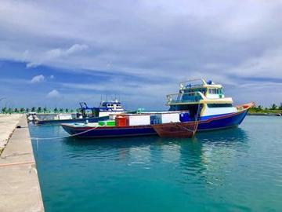

Home / Crossroads and Golden Ages / South Asia
Encyclopedia ID 917
Maldivian chess
Also known as Raazuvaa
Island chess variant with the same pieces but different pawn moves.
Heritage note
Part of the living heritage of Maldives.
Origins
Usually placed in the era of Crossroads and Golden Ages (about 500 to 1500), although its exact origins are uncertain, within the cultural world of South Asia.
Sources
Related entries


More from Maldives

Bashi
Maldives · Street and playground games
Maldivian lacquer work
Maldives · Crafts and making
Pole-and-line tuna fishing from a masdhoni
Maldives · Dexterity and skill games
Stick game
Maldives +1 · Street and playground gamesAkuru Thaasbe
Maldives · Other traditionsBaibalaa
Maldives · Street and playground games